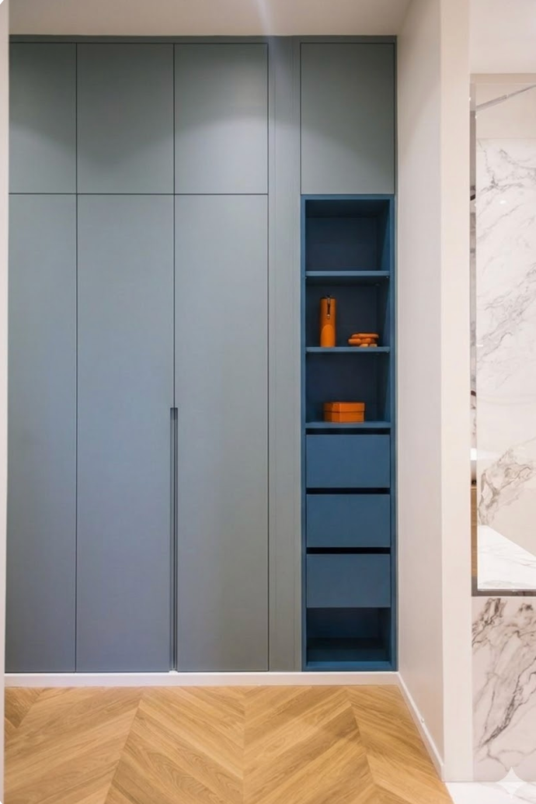
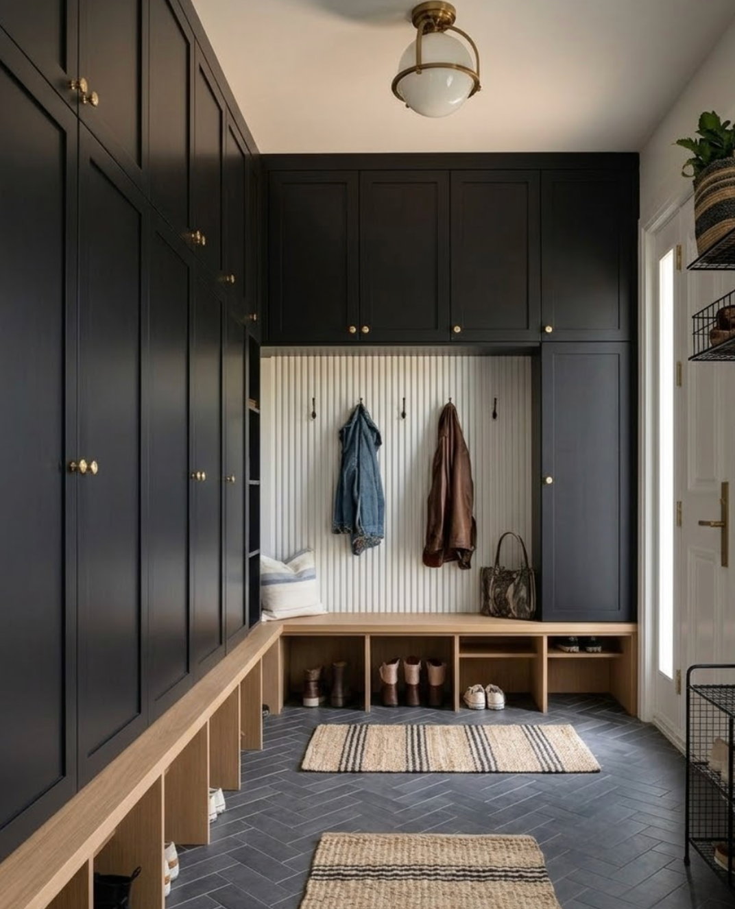
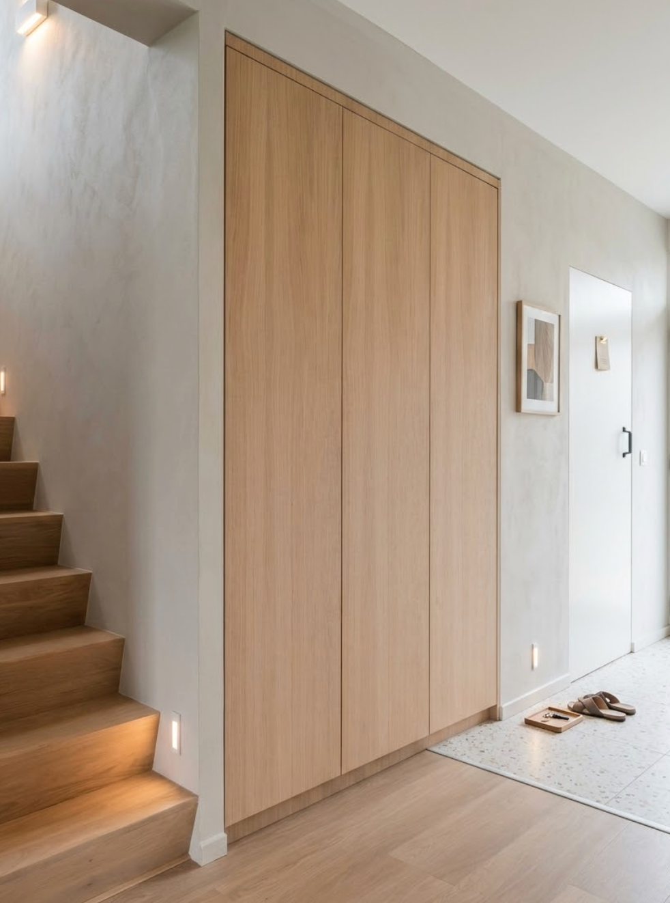

Jouw ultieme gangkast op maat
Een gangkast op maat is de slimste investering die je kunt doen voor een opgeruimde en stijlvolle hal. Of je nu jassen, schoenen, tassen of sportspullen kwijt wilt: met een gangkast op maat benut je elke centimeter van jouw ruimte optimaal. In dit artikel ontdek je alles over het ontwerpen, de indeling, de materialen en de kosten van jouw perfecte maatwerkkast voor de gang.
Waarom kiezen voor een gangkast op maat?
Een standaard kast past zelden perfect in de gang. De meeste hallen hebben lastige afmetingen, een schuine wand, een vreemde nis of een lage plafondrand. Een op maat gemaakte gangkast sluit hier naadloos op aan. Het resultaat is een kast die eruitziet alsof hij altijd al onderdeel was van jouw interieur.
Bovendien heb je bij maatwerk volledige vrijheid in ontwerp. Jij bepaalt de hoogte, breedte, diepte, kleur en indeling. Wil je hoge hangdelen voor lange jassen, een schoenenrek, lades voor wanten en sjaals, of een handige kapstok geïntegreerd in de kast? Alles is mogelijk. Een gangkast op maat is dan ook niet alleen praktisch, maar ook een echte blikvanger in je entree.
De ideale indeling van jouw gangkast op maat
De indeling is het hart van een goed functionerende gangkast. Begin met een inventarisatie van wat je wilt opbergen. Denk aan jassen, laarzen, sneakers, handtassen, paraplu's, helmen en of tennisrackets. Op basis daarvan stel je de ideale kastindeling samen.
Veelgebruikte onderdelen van een gangkast
- Hanggedeelte voor jassen en kleding (minimaal 140 cm hoog)
- Schoenenrek of schoenenlades voor een overzichtelijke opslag
- Open vakken of planken voor tassen en helmen
- Lades voor kleine accessoires zoals sleutels, wanten en sjaals
- Klepkast bovenin voor seizoensitems die je minder vaak nodig hebt
- Geïntegreerde kapstok of haakjesstrip aan de binnenkant van de deur
Tip: ga ook na of je de kast tot aan het plafond wilt laten lopen. Een vloer-tot-plafond gangkast oogt strak en biedt maximale opbergruimte. Bovendien maakt het de ruimte optisch groter.
Materialen en afwerking: wat past bij jou?
De materiaalkeuze bepaalt niet alleen de uitstraling, maar ook de duurzaamheid en de prijs van jouw gangkast op maat. De meest gangbare opties zijn meubelplaat (MDF of spaanplaat), massief hout, gelakt MDF en fineer. Elk materiaal heeft zijn eigen voor- en nadelen.
Populaire materialen op een rij
- MDF / meubelplaat: voordelig, glad oppervlak, ideaal voor lakafwerking en tijdloos wit
- Fineer (bijv. eiken of noten): natuurlijke uitstraling, warmer en luxueuzer
- Massief hout: het meest duurzaam en exclusief, maar ook de duurste optie
Je kan natuurlijk voor een combinatie gaan, met geschilderd MDF én fineer. We laten hieronder wat verschillende opties zien ter inspiratie. MDF, eventueel met 2 kleuren, MDF en fineer, of alleen fineer (of hout).



Ook de deuren spelen een grote rol in het totaalplaatje. Draaiende deuren zijn doorgaans voordeliger, terwijl schuifdeuren veel ruimte besparen in een smalle gang. Glazen deuren geven een open en luchtig gevoel, maar laten de inhoud ook zichtbaar. Kies wat het beste past bij jouw levensstijl en interieur.
Wat kost een gangkast op maat?
De prijs van een gangkast op maat varieert sterk, afhankelijk van de afmetingen, het materiaal, de deuren en de gewenste indeling. Als globale richtlijn kun je rekening houden met een prijs tussen €1000 en €5.000 of meer. Een eenvoudige maatwerkkast in mdf begint rond de €1.000 per strekkende meter, inclusief montage.
Factoren die de prijs beïnvloeden zijn onder andere: de complexiteit van het ontwerp (bijv. schuin dak of nis), het type deuren (draai, schuif of glas), de materiaalkeuze en eventuele extra's zoals verlichting of zachte sluiters. Wil je besparen? Kies dan voor een kast met planken en roeden in standaard meubelplaat. Houd ook rekening met een levertijd van twee tot twaalf weken, afhankelijk van de timmerman en de complexiteit.
Zo ontwerp je de perfecte gangkast op maat
Een goede voorbereiding is het halve werk. Begin met het opmeten van je gang: noteer de exacte breedte, hoogte en diepte. Houd rekening met obstakels zoals stopcontacten, schakelkasten, radiatoren of een deuropening. Schets vervolgens een ruwe kastindeling op basis van jouw dagelijkse behoeften.
Veel kastenbouwers bieden een gratis 3D-ontwerp of online configurator aan waarmee je jouw gangkast visueel kunt samenstellen voordat er een schroef in de muur gaat. Maak hier gebruik van om zeker te weten dat de indeling en uitstraling precies kloppen. Vraag altijd meerdere offertes aan om prijzen en kwaliteit te vergelijken.
Klaar om jouw gangkast op maat te laten maken? Neem vandaag nog contact met ons op voor een vrijblijvend gesprek en een persoonlijke offerte op maat. Samen creëren we de gangkast die perfect past bij jouw woning en wensen.
Wie maken jouw gangkast op maat?
Achter De Ruimtemannen staan Anielson en Reinoud: twee ervaren vakmannen met een gedeelde liefde voor hoogwaardig timmerwerk. Anielson combineert jarenlange brede ervaring in de bouw met een verfijnde expertise als meubelmaker. Reinoud sloeg na de verkoop van zijn bedrijf een nieuwe weg in, volgde een intensieve ambachtelijke houtbewerkingsopleiding in Zwitserland, en vormt inmiddels de vaste rechterhand van Anielson.
Samen pakken we elke klus aan met precisie, plezier en een persoonlijke aanpak. We maken de meubels met uiterste zorg, en we ronden ons werk pas af als jij 100% tevreden bent met het eindresultaat in jouw hal.
Veel gestelde vragen over een gangkast op maat
Wat kost een gangkast op maat gemiddeld?
De kosten van een gangkast op maat liggen gemiddeld tussen de €1.000 en €1.750 per strekkende meter, inclusief transport en montage. Een eenvoudige kast in meubelplaat is al te realiseren vanaf ongeveer €1000, terwijl een luxe maatwerkkast in massief hout of met schuifdeuren al snel €3.000 tot €5.000 of meer kan kosten. De uiteindelijke prijs hangt af van de afmetingen, het materiaal, de deuren en de gekozen accessoires.
Hoelang duurt het maken van een gangkast op maat?
De doorlooptijd voor een gangkast op maat varieert doorgaans tussen de 2 en 12 weken. Dit hangt af van de complexiteit van het ontwerp, de beschikbaarheid van materialen en de planning van de vakman. Een eenvoudige kast in standaardmaterialen is sneller leverbaar dan een volledig op maat ontworpen inbouwkast met speciale afwerkingen. Vraag bij aanvraag altijd naar de verwachte levertijd.